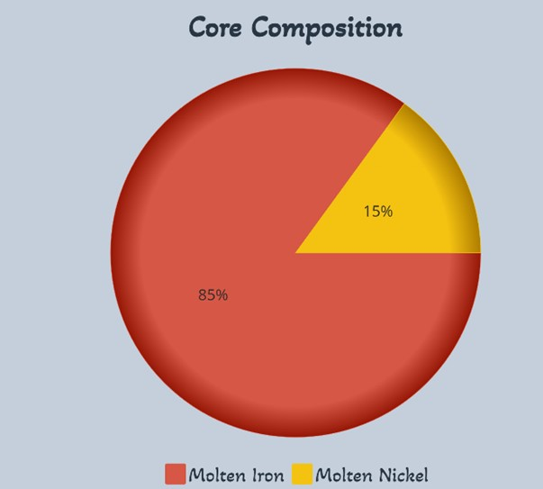
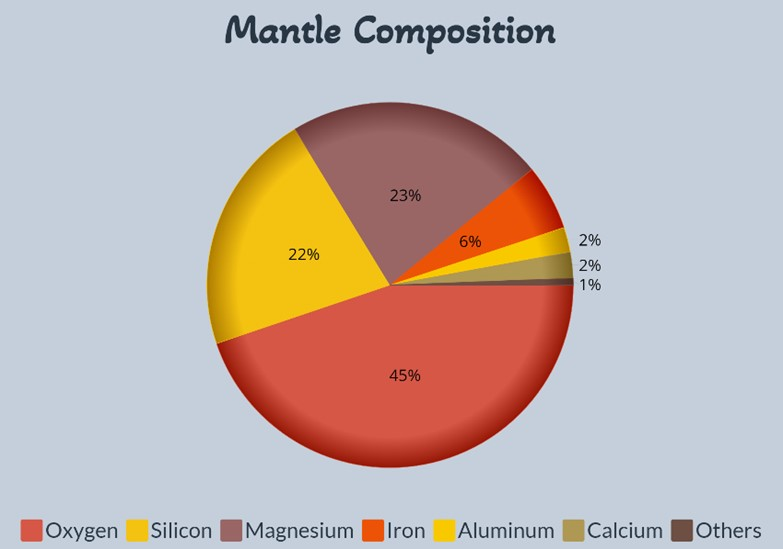
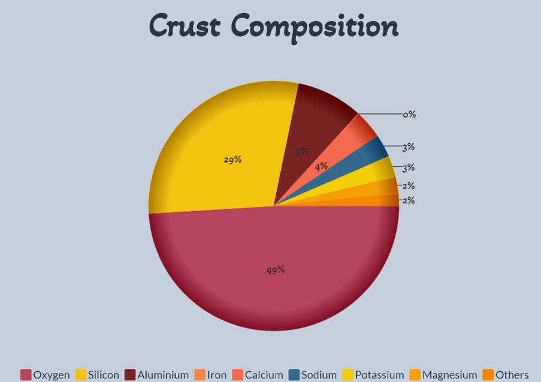
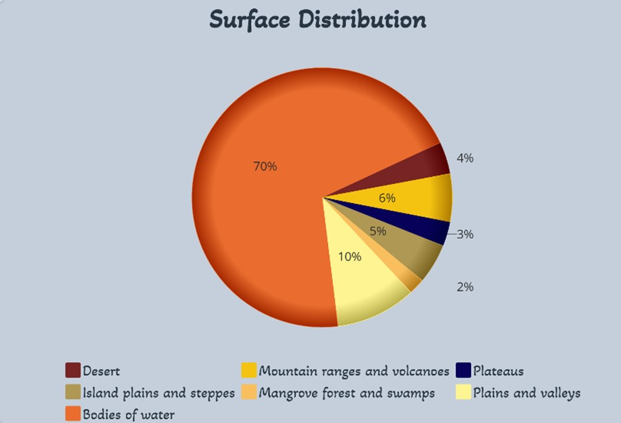
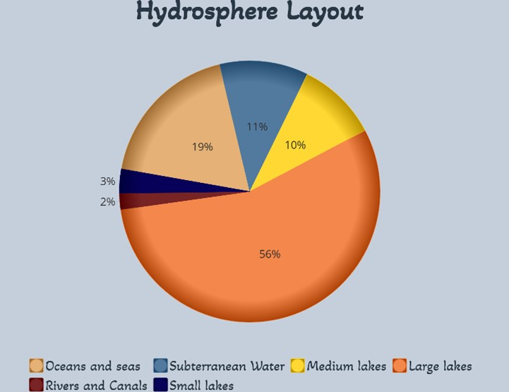

Planetary Geology
Prometheva’s geography, which contains a diverse array of features and characteristics, all interconnected by complex biogeochemical, tectonic, hydrological and atmospheric systems and cycles.
Planetary Structure
Core: The core is a very dense section with extremely high temperatures that is located at the middle of Prometheva. It is made up of 85% molten iron and 15% molten nickel.  Mantle: Prometheva's mantle consists of 44.8% oxygen, 21, 5% silicon, 22, 8% magnesium, 5.8% iron, 2.2% aluminum, 2.3% calcium, 0.3% sodium, 0.03% potassium, and a few other minerals and elements.  Crust: The planet's outermost layer is almost fully made up of 8 elements, with 98.5% of it being oxygen, silicon, aluminum, iron, calcium, sodium, potassium and magnesium. The other 1.5% is formed by almost 100 other elements in very small amounts. 
The crust contains various key elements and compounds for human civilization, such as iron, aluminum, copper, silicon, zinc, lead, gold, silver, nickel, platinum, quartz, rare earth elements, and more. All of these are used in various applications, such as construction, vehicle production, electronics and semiconductor manufacturing, medical applications, energy storage and renewable energy systems, glass and ceramics, fertilizers, etc. Since this is the ideal location for humanity, these all exist in abundance and would be easily accessible all over Prometheva. In addition, the soil here is extremely fertile and suitable for agricultural production, being rich in nitrogen, phosphorus, potassium, calcium, magnesium, iron, zinc, manganese, and more. It is composed of sand, clay and silt and has a medium pH level, ranging from 6 to 7.
Prometheva’s lithosphere (crust and small part of the upper mantle) is split into 5 tectonic plates: 4 being major, each covering around 3 million square kilometers each; and 1 secondary plate covering approximately 1.3 million square kilometers. The friction and movement between these causes the formation of many of the characteristic geographic features that Prometheva has. But at the same time, the reduced amount and difference in size of these, prevents very regular and impactful seismic activity and makes the planet safer for harboring life.
Geography
Prometheva is made up of 5 main continents and a few scattered archipelagos, 2 medium bodies of saltwater, 6 large bodies of freshwater, 29 medium lakes, 18 expansive river networks, 2 polar ice caps, and 7 major mountain ranges. The whole planet is characterized by having an impressively widespread hydrosphere, allowing for the boundless growth of wildlife and the presence of an immense biodiversity. There are various different geographic zones and biomes, the most prominent ones being the coastal plain and the river valley (some of the most water dense and fertile areas on the planet). It will also have large swaths of jungles, forests, and swamps. There are a few inland plain and steppe regions.The planet will have canyon formations due to the water cycle and erosion; and certain delta regions and mangrove forests can be found along the coast. There are also a few deserts, which cover around 4% of the planet. As mentioned before, the planet will have many lakes dotted around the landscape. Additionally, the volcanic mountain ranges in Prometheva, rich in many useful minerals and metals, follow along the middle and sides of the continents, creating the aforementioned river valleys and coastal plains. Slightly below the surface we can also find an extensive aquifer network that gives even more access to freshwater.
The surface distribution of Prometheva is as follows: 4% of the planet is covered by desert, 6% is covered by mountain ranges and volcanoes, 3% is covered by plateaus, 5% is covered by inland plains and steppes, 2% is covered by mangrove forests and swamps, 10% is covered by plains and valleys, the other 70% is covered by bodies of water, with 13% being saltwater seas, 48% being large bodies of freshwater, 7% being rivers and natural canals,and 2% being small lakes.
Hydrosphere Layout
Prometheva’s hydrosphere is spread out between surface and subterranean water, 89% of which is on the surface, in oceans, seas, lakes, rivers, etc., and the other 11% is found in expansive underwater cavern networks that stretch across hundreds of square kilometers and give water access to places that don’t have oceans, rivers, seas or lakes. It reaches up to 11.2km in depth.
Importance of Ice Caps for Thermal Regulation
Although Prometheva is very lush, biodiverse and water rich, near its poles are still cold tundras and expanses of frozen ice. This may seem unattractive, but in reality these are key elements for weather and climate management. These ice caps act as heat regulators through 3 main methods: their albedo, by being heatsinks, and by melting. Albedo: Because of the ice caps' high albedo, they reflect a substantial portion of incoming solar radiation back into space, preventing excessive heat absorption by the Earth's surface. Natural Heatsinks: Polar ice caps also act as heatsinks, meaning they absorb excess heat during warm periods and release it during cooler ones, thus mitigating extreme temperature fluctuations. Melting: When these ice caps melt, they contribute to the global water current network, which also plays a role in temperature regulation at a planetary scale. All of this helps strike a balance in the planet's temperature, which on average stands at around 15°C, which is ideal for life and equal to Earth's average temperature.
Atmospheric Composition
Prometheva’s atmosphere is very similar to Earth's, consisting of two different layers (to prevent excessive heating), reaching hundreds of kilometers above the surface of the planet. This atmosphere is composed of 21% oxygen, 78% nitrogen, 0.30% water vapor, 0.10% argon, 0.028% carbon dioxide, it has an approximate of 280 ppm of carbon dioxide, 0.03% ozone, and a few other gasses. This is the ideal atmosphere to provide enough radiation protection, heat retention, humidity and necessary gasses for metabolism in living beings to take place. Oxygen: Essential for aerobic respiration: the release of energy in the form of ATP by breaking down nutrients through the intake of oxygen, yielding Carbon Dioxide as a byproduct. It is also used to synthesize carbohydrates (such as glucose) and varied structures, and is key in combustion reactions. Nitrogen: Dilutes oxygen in the atmosphere, preventing rapid burning at the Earth's surface. It is also used by living organisms to create proteins, along with Carbon, Hydrogen, and Oxygen. Argon: Used in light-bulbs (when excited to produce light), windows, and the preservation of artifacts. Carbon Dioxide: Used by plants in photosynthesis, yielding oxygen as a byproduct. It also acts as a greenhouse gas, entrapping heat in the planet and preventing it from excessively cooling down (when in right concentrations). Water vapor: Contributes to the water cycle, condensing into clouds and causing rain to occur.